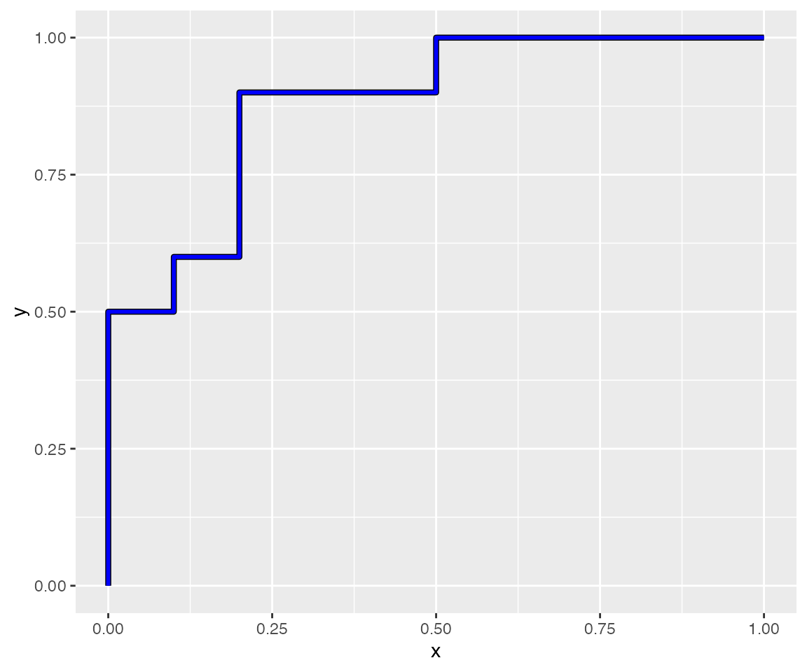
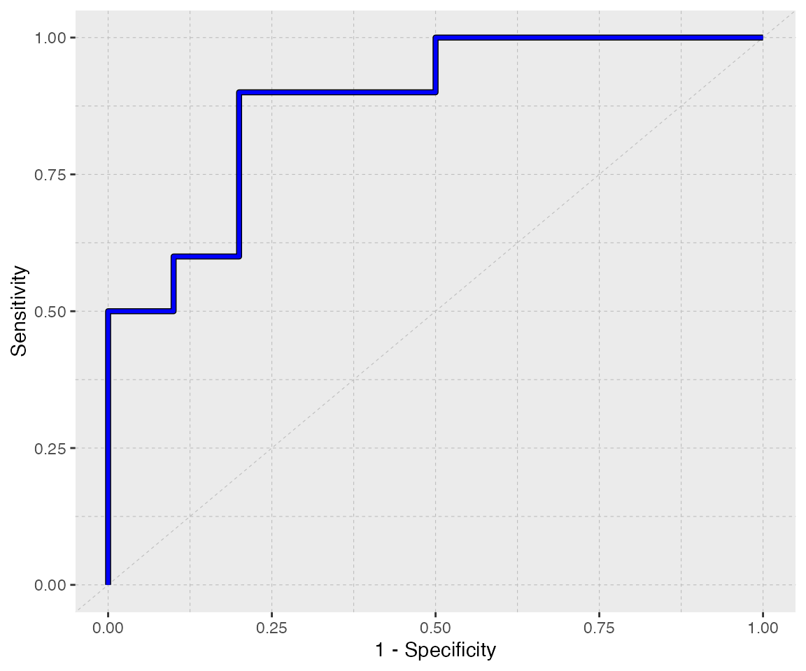
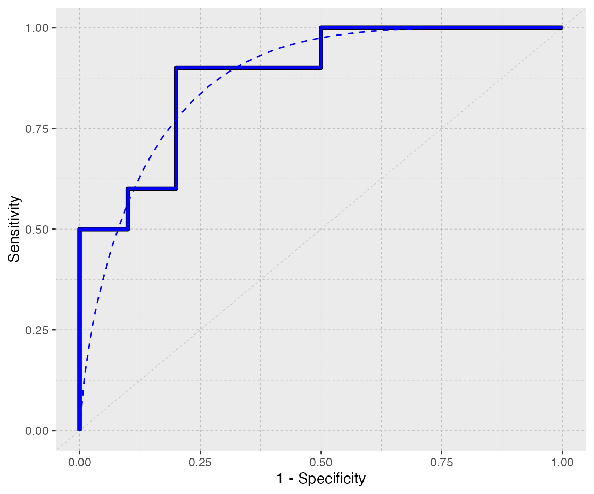
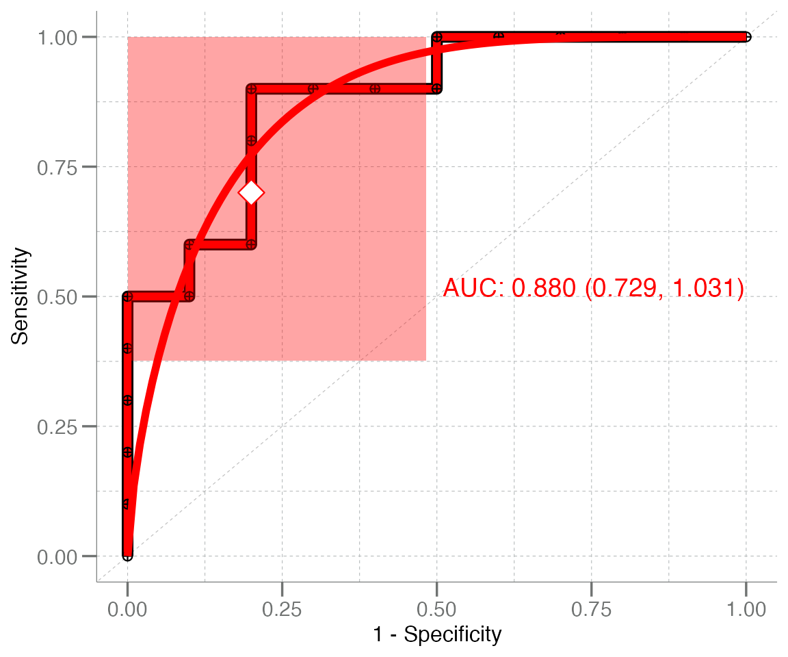
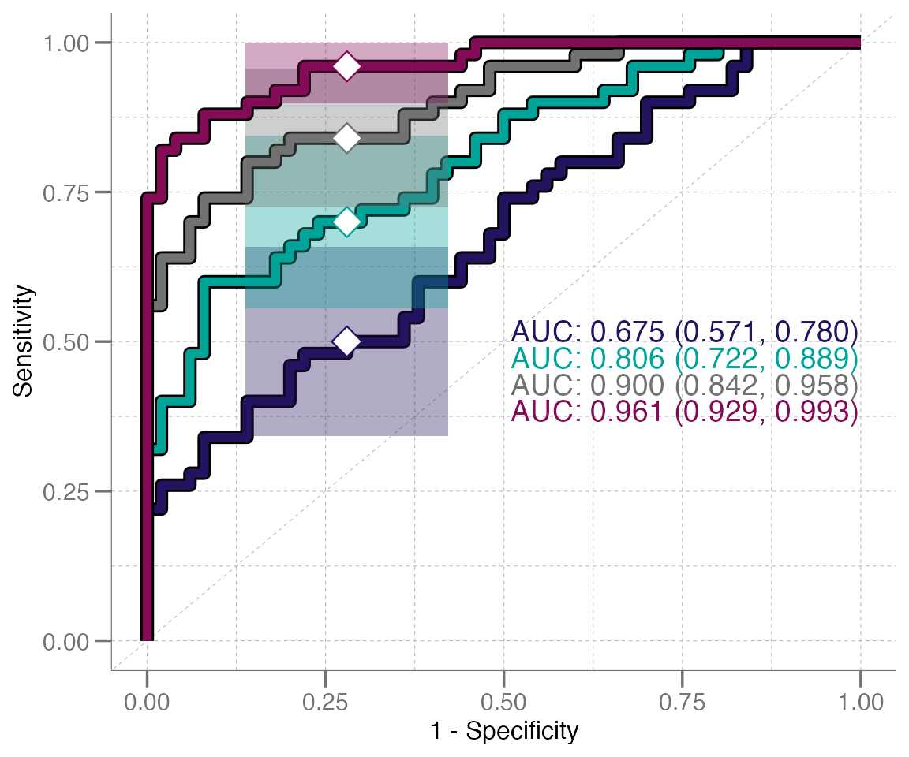
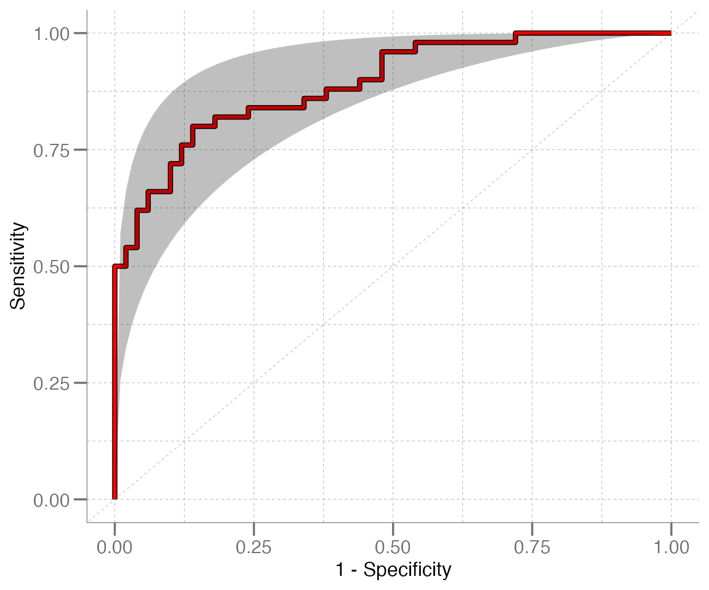
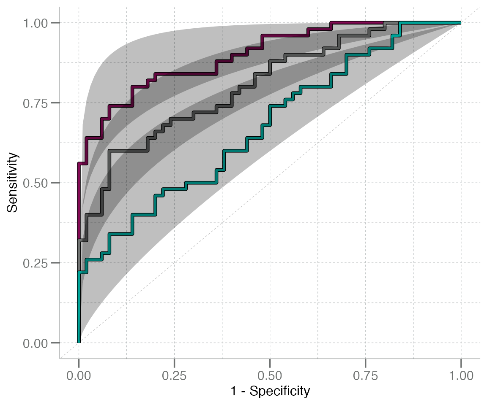

Plotting ROC Curves
Amanda Hiser
plotting-ROC-with-geom_roc.RmdIntroduction & Brief Review of ROC Curves
This vignette describes how to plot ROC curves using functions found in libml. Before starting on the code walk through, however, we will provide a quick refresher on ROC curves. Skip to the next section if this information is already familiar to you.
A receiver operating characteristic curve, or ROC curve, is a graphical device that helps to visualize the discriminatory ability of a binary classifier system.
To produce a ROC curve, the sensitivity (aka true positive rate) and specificity (aka false positive rate) are calculated for different values from a continuous set of data. To translate this into a visualization, the ROC curve is made by plotting sensitivity (on the y-axis) against 1–specificity (on the x-axis) for the calculated values.
A ROC curve that follows the diagonal (unit) line y = x produces false positive results at the same rate as true positive results. Classifiers with reasonable accuracy should have a ROC curve with its highest point in the upper left corner of a plot, above the y = x line. This accuracy can be quantified using the area under the ROC curve (AUC) metric, which is a measure of the ability of a test to discriminate between groups or correctly identify when a condition is present. The higher the AUC, the better the model is at making accurate predictions. For example, an AUC of 0.5 represents a test with no discriminating ability (basically no better than chance), while an AUC of 1.0 represents a test with perfect discrimination. It is common to see a graphical representations of a ROC curve paired with the corresponding numeric AUC value.
Fun fact: The ROC curve was first developed by electrical engineers and radar engineers during World War II, for the purpose of detecting enemy objects in battlefields by operators of military radar receivers. This is how the curve got its name.
Plotting ROC Curves
ROC curves are a frequently used visualization tool for model assessment, classifier performance, biomarker evaluation, and more. Consequently, the libml package is well-equipped to easily and quickly generate and visualize ROC curves and AUC values.
At the most basic level, individual ROC curves can be generated using
the geom_roc() function. This function creates a ggplot2-compatible
“geom” layer that generates and plots a ROC curve, utilizing
the ggplot2-style grammar of graphics.
The primary input for geom_roc() is the output of
roc_xy() (also from libml), and this is
generally used in support of the wrapper functions
plot_emp_roc() and plot_boot_roc(). These
functions generate ROC curve plots, but provide more advanced options
for plot annotation and confidence interval generation,
respectively.
To illustrate how geom_roc() can be used to create a ROC
curve, we must first generate an example data set to work with. The
roc_xy() function will then create the x and
y values required to plot the curve from this data set.
# Generate example data
true <- rep(c("control", "disease"), each = 10)
pred <- withr::with_seed(8, c(rnorm(10, mean = 0.4, sd = 0.2),
rnorm(10, mean = 0.6, sd = 0.2)))
# Calculate x & y coords for the ROC curve using data generated above
rocxy <- roc_xy(true, pred, "disease") |>
data.frame() # must cast to a data frame for ggplot()
head(rocxy)
#> x y
#> 1 0 0.0
#> 2 0 0.1
#> 3 0 0.2
#> 4 0 0.3
#> 5 0 0.4
#> 6 0 0.5Now that we have obtained the coordinates for the ROC curve, we can
use ggplot() and geom_roc() to plot the
curve:
# Set up ggplot2-style plot mappings
ggplot(data = rocxy, mapping = aes(x = x, y = y)) +
geom_roc(color = "blue") # add curve layer to plot
You’ll notice that this is a very simplistic plot; because
geom_roc() merely creates the ROC curve layer (without
modifying the axis labels, plot title, etc.), the plot above is pretty
basic and uses the default ggplot2 theme. We can class it up a bit by
applying and/or modifying additional theme elements:
p <- ggplot(data = rocxy, aes(x = x, y = y)) +
labs(x = "1 - Specificity", y = "Sensitivity") +
theme(panel.grid = element_blank()) +
geom_abline(slope = 1, intercept = 0, size = 0.2,
linetype = "dashed", color = "grey") +
theme(panel.grid.minor = element_line(linetype = "dashed",
color = "grey", size = 0.2),
panel.grid.major = element_line(linetype = "dashed",
color = "grey", size = 0.2)) +
geom_roc(color = "blue")
#> Warning: Using `size` aesthetic for lines was deprecated in ggplot2 3.4.0.
#> ℹ Please use `linewidth` instead.
#> This warning is displayed once per session.
#> Call `lifecycle::last_lifecycle_warnings()` to see where this warning was generated.
#> Warning: The `size` argument of `element_line()` is deprecated as of ggplot2 3.4.0.
#> ℹ Please use the `linewidth` argument instead.
#> This warning is displayed once per session.
#> Call `lifecycle::last_lifecycle_warnings()` to see where this warning was generated.
p
A fitted line can be layered on top of this curve using
geom_rocfit(). Like other geoms, features of
the fit line (like color, size, line type, etc.) can be customized:
p + geom_rocfit(data = rocxy, color = "blue", lty = "dashed")
You’ll notice that it took a decent number of lines of code to get to this point, even though the final product is still a rather simplistic plot. The wrapper functions mentioned previously alleviate this issue by baking all of these steps into one single function.
Convenient Wrappers
plot_emp_roc()
It’s often advantageous to annotate ROC curves with AUC values, draw points along the curve, and add other visual features to make the plot easier to interpret and more informative. Additionally, when comparing multiple ROC curves, it’s useful to layer the curves on top of each other to aid in visual comparison and simplify the overall presentation.
However, adding annotation and/or text layers and customizing theme
elements can become labor intensive and messy when there are 2+ curves
(plus fit lines, in some cases) to plot. The wrapper function
plot_emp_roc() streamlines this process by generating
custom annotations under the hood.
plot_emp_roc(truth = true,
predicted = pred,
pos_class = "disease",
plot_fit = "both", # both ROC and fit line should be drawn
col = "red",
shape = 10)
The plots generated by plot_emp_roc() can also be
layered, to compare ROC curves generated from various data sets:
# Generate additional datasets
n <- 50
data <- lapply(1:4, function(.x) {
withr::with_seed(101,
data.frame(truth = rep(c("control", "disease"), each = n),
pred = c(rnorm(n), rnorm(n, mean = .x / 2)))
)
}) |> setNames(paste0("df_", 1:4L))
# Create a color palette to distinguish the curves
cols <- unlist(libml:::col_palette)
# Create a base plot & layer additional curves layered on top
plot_emp_roc(data$df_1$truth, data$df_1$pred, "disease", col = cols[1L]) +
plot_emp_roc(data$df_2$truth, data$df_2$pred, "disease", col = cols[2L], add = 1) +
plot_emp_roc(data$df_3$truth, data$df_3$pred, "disease", col = cols[3L], add = 2) +
plot_emp_roc(data$df_4$truth, data$df_4$pred, "disease", col = cols[4L], add = 3)
Note: when adding plots together, the
add = argument (integer) must be passed and set to
the plotting layer (zero indexed) for the desired curve. This is used to
stagger the AUC text annotation values so that they do not overlap.
plot_boot_roc()
This system/syntax can also be used for the other wrapper function,
plot_boot_roc(), which has a similar syntax to
plot_emp_roc() and is also built around
geom_roc(). The primary difference between these two is
that plot_emp_roc() has more options for customizing the
plot appearance, while plot_boot_roc() is designed to
generate and visualize bootstrapped CI95 intervals via a shaded region
in addition to the ROC curve.
# Simulate a new example dataset for this example
n <- 50
true <- rep(c("control", "disease"), each = n)
pred <- withr::with_seed(1, c(rnorm(n, 0.2, 0.2), rnorm(n, 0.5, 0.2)))
plot_boot_roc(true, pred, "disease", shade.color = "blue", color = "red", nboot = 200)
#> Warning in geom_roc(data = rocxy, aes(x = x, y = y), ...): Ignoring unknown parameters:
#> `shade.colour`
These plots can also be layered, with similar syntax to
plot_emp_roc():
plot_boot_roc(data$df_3$truth, data$df_3$pred, "disease", shade.color = cols[4L],
color = cols[4L], nboot = 200) +
plot_boot_roc(data$df_2$truth, data$df_2$pred, "disease", shade.color = cols[3L],
color = cols[3L], nboot = 200, add = TRUE) +
plot_boot_roc(data$df_1$truth, data$df_1$pred, "disease", shade.color = cols[2L],
color = cols[2L], nboot = 200, add = TRUE)
#> Warning in geom_roc(data = rocxy, aes(x = x, y = y), ...): Ignoring unknown parameters: `shade.colour`
#> Ignoring unknown parameters: `shade.colour`
#> Ignoring unknown parameters: `shade.colour`